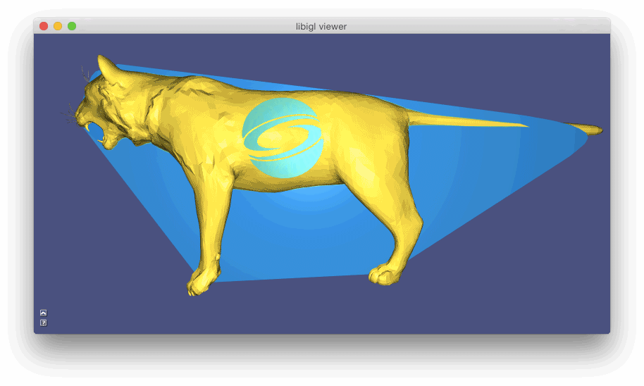
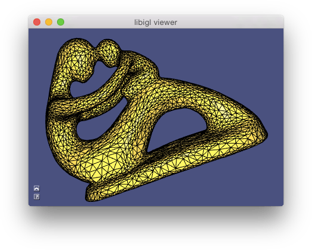
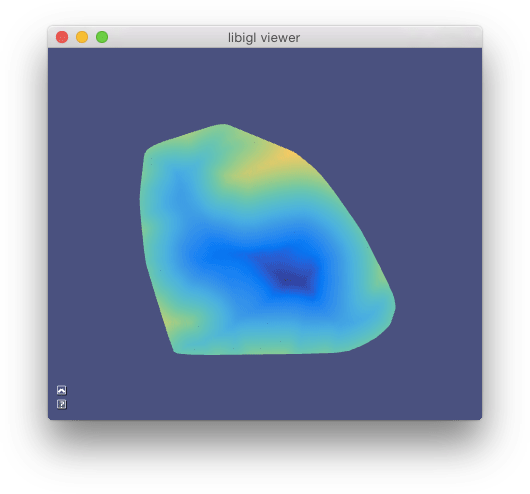
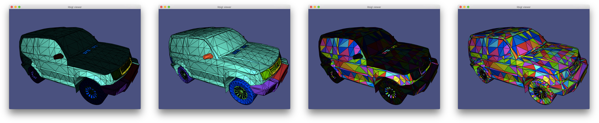
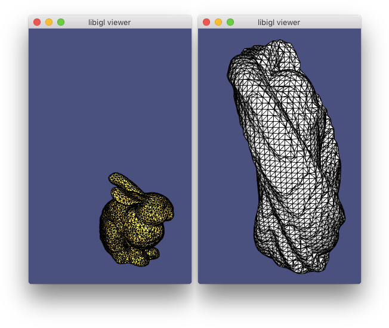
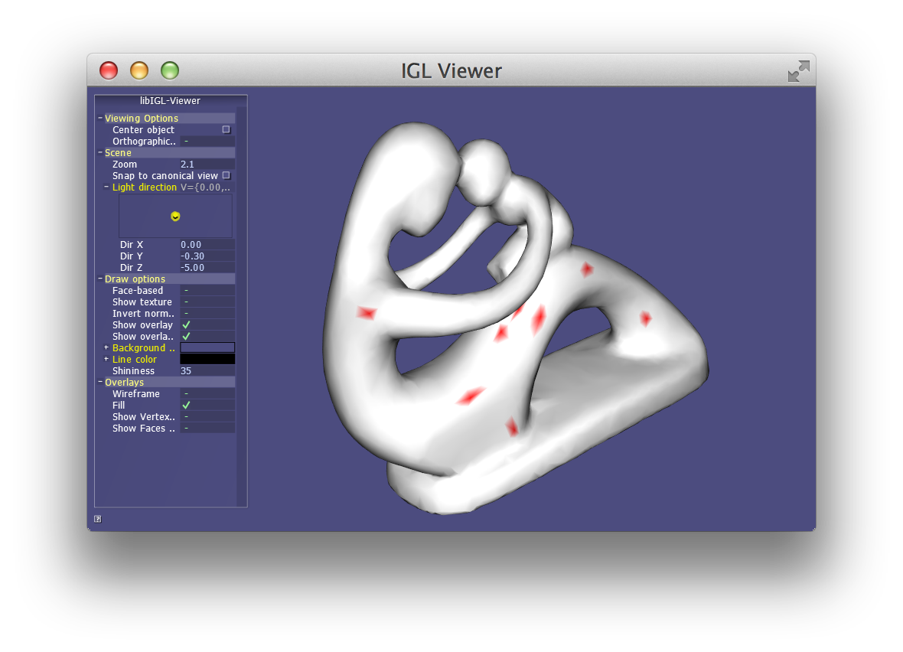
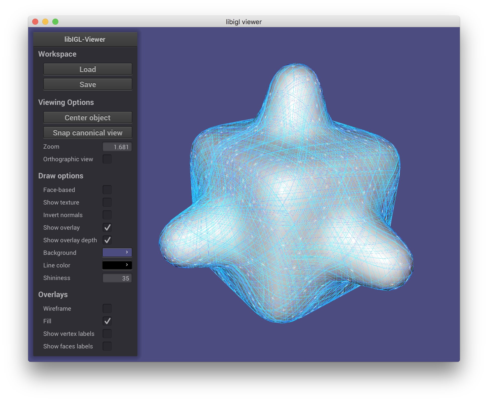
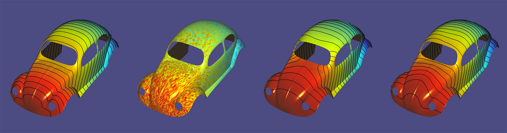
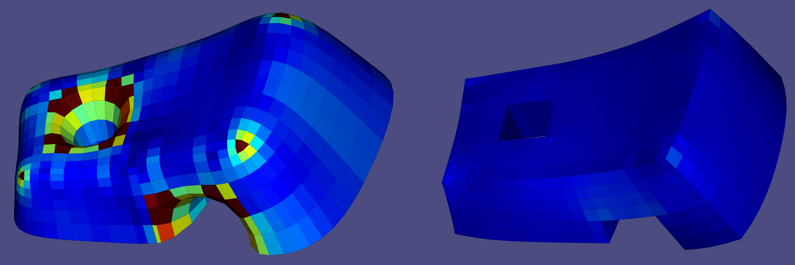

Miscellaneous [chapter7:miscellaneous]¶
Libigl contains a wide variety of geometry processing tools and functions for dealing with meshes and the linear algebra related to them: far too many to discuss in this introductory tutorial. We've pulled out a couple of the interesting functions in this chapter to highlight.
Mesh Statistics [meshstatistics]¶
Libigl contains various mesh statistics, including face angles, face areas and the detection of singular vertices, which are vertices with more or less than 6 neighbours in triangulations or 4 in quadrangulations.
The example Statistics computes these quantities and does a basic statistic analysis that allows to estimate the isometry and regularity of a mesh:
Irregular vertices: 136/2400 (5.67%) Areas (Min/Max)/Avg_Area Sigma: 0.01/5.33 (0.87) Angles in degrees (Min/Max) Sigma: 17.21/171.79 (15.36)
The first row contains the number and percentage of irregular vertices, which is particularly important for quadrilateral meshes when they are used to define subdivision surfaces: every singular point will result in a point of the surface that is only C^1.
The second row reports the area of the minimal element, maximal element and the standard deviation. These numbers are normalized by the mean area, so in the example above 5.33 max area means that the biggest face is 5 times larger than the average face. An ideal isotropic mesh would have both min and max area close to 1.
The third row measures the face angles, which should be close to 60 degrees (90 for quads) in a perfectly regular triangulation. For FEM purposes, the closer the angles are to 60 degrees the more stable will the optimization be. In this case, it is clear that the mesh is of bad quality and it will probably result in artifacts if used for solving PDEs.
Generalized Winding Number [generalizedwindingnumber]¶
The problem of tetrahedralizing the interior of closed watertight surface mesh is a difficult, but well-posed problem (see our [Tetgen wrappers][tetrahedralizationofclosedsurfaces]). But black-box tet-meshers like TetGen will refuse input triangle meshes with self-intersections, open boundaries, non-manifold edges from multiple connected components. The problem is two-fold: self-intersections present contradictory facet constraints and self-intersections/open-boundaries/non-manifold edges make the problem of determining inside from outside ill-posed without further assumptions.
The first problem is easily solved by "resolving" all self-intersections.
That is, meshing intersecting triangles so that intersects occur exactly at
edges and vertices. This is accomplished using igl::selfintersect.
TetGen can usually tetrahedralize the convex hull of this "resolved" mesh, and then the problem becomes determining which of these tets are inside the input mesh and which are outside. That is, which should be kept and which should be removed.
The "Generalized Winding Number" is a robust method for determined
inside and outside for troublesome meshes [#jacobson_2013][]. The generalized
winding number with respect to (V,F) at some point \mathbf{p} \in
\mathcal{R}^3 is defined as scalar function:
w(\mathbf{p}) = \sum\limits_{f_i\in F} \frac{1}{4\pi}\Omega_{f_i}(\mathbf{p})
where \Omega_{f_i} is the solid angle subtended by f_i (the ith face in
F) at the point \mathbf{p}. This solid angle contribution is a simple,
closed-form expression involving atan2 and some dot-products.
If (V,F) does form a closed watertight surface, then w(\mathbf{p})=1 if
\mathbf{p} lies inside (V,F) and w(\mathbf{p})=0 if outside (V,F). If
(V,F) is closed but overlaps itself then w(\mathbf{p}) is an integer value
counting how many (signed) times (V,F) wraps around \mathbf{p}. Finally,
if (V,F) is not closed or not even manifold (but at least consistently
oriented), then w(\mathbf{p}) tends smoothly toward 1 as \mathbf{p} is
more inside (V,F), and toward 0 as \mathbf{p} is more outside.

Mesh Decimation [meshdecimation]¶
The study of mesh simplification or decimation is nearly as old as meshes themselves. Given a high resolution mesh with too many triangles, find a "well approximating" low resolution mesh with far fewer triangles. By now there are a variety of different paradigms for solving this problem and state-of-the-art methods are fairly advanced.
One family of mesh decimation methods operates by successively remove elements from the mesh. In particular, Hoppe advocates for successively remove or rather collapsing edges [#hoppe_1996][]. The generic form of this technique is to construct a sequence of n meshes from the initial high-resolution mesh M_0 to the lowest resolution mesh M_n by collapsing a single edge:
M_0 \mathop{\longrightarrow}_\text{edge collapse} M_1 \mathop{\longrightarrow}_\text{edge collapse} \dots \mathop{\longrightarrow}_\text{edge collapse} M_{n-1} \mathop{\longrightarrow}_\text{edge collapse} M_n.
Hoppe's original method and subsequent follow-up works propose various ways to choose the next edge to collapse in this sequence. Using a cost-based paradigm, one can maintain a priority queue of edges based on their "cost" (how much "worse" will my approximation be if I remove this edge?). The cheapest edge is collapsed and costs of neighboring edges are updated.
In order to maintain the topology (e.g. if the mesh is combinatorially as sphere or a torus etc.), one should assign infinite cost to edges whose collapse would alter the mesh topology. Indeed this happens if and only if the number of mutual neighbors of the endpoints of the collapsing edge is not exactly two!
If there exists a third shared vertex, then another face will be removed, but 2 edges will be removed. This can result in unwanted holes or non-manifold "flaps".

There is also a one-off condition that no edges of a tetrahedron should be collapsed.
Because libigl (purposefully) does not center its implementations around a dynamic mesh data structure (e.g. half-edge datastructure), support for topology changes are limited. Nonetheless, libigl has support for isolated edge collapses, sequences of edge-collapses (each in O(log) time) and priority queue based decimation.
The simplest is igl::decimation. By calling
igl::decimate(V,F,1000,U,G);
the mesh (V,F) will be decimated to a new mesh (U,G) so that G has at
most 1000 faces. This uses default (naive) criteria for determining the cost
of an edge collapse and the placement of the merged vertex. Shortest edges are
collapsed first, and merged vertices are placed at edge midpoints.
One can also provide function handles (c++ lambda functions are convenient
here) cost_and_placement and stopping_condition for determining the
cost/placement of an edge collapse and the stopping condition respectively. For
example, the default version above is implemented as:
igl::decimate(V,F,shortest_edge_and_midpoint,max_m,U,G);
where shortest_edge_and_midpoint assign the edge's length as cost and its
midpoint as the merged vertex placement and max_m counts the current number
of faces (valid collapses decrease count by 2) and returns true if the count
drops below m=1000.
One can also scratch deeper inside the decimation loop and call
igl::collapse_edge directly. In order to operate efficiently, this routine
needs more than the usual (V,F) mesh representation. We need E a list of
edge indices, where E.row(i) --> [s,d]; we need EMAP which maps the
"half"-edges of each triangle in F to its corresponding edge in E so that
E.row(EMAP(f+i*F.rows)) --> [s,d] if the edge across from the ith corner of the
fth face is [s,d] (up to orientation); we need EF and EI which keep track
of the faces incident on each edge and across from which corner of those faces
the edges appears, so that EF(e,o) = f and EI(e,o) = i means that the edge
E.row(e) --> [s,d] appears in the fth face across from its ith corner (for
o=0 the edge orientations should match, for o=1 the orientations are
opposite).
When a collapse occurs, the sizes of the F,E, etc. matrices do not change.
Rather rows corresponding to "removed" faces and edges are set to a special
constant value IGL_COLLAPSE_EDGE_NULL. Doing this ensures that we're able to
remove edges in truly constant time O(1).
Conveniently
IGL_COLLAPSE_EDGE_NULL==0. This means most OPENGL style renderings ofFwill simply draw a bunch of 0-area triangles at the first vertex.
The following will collapse the first edge and place its merged vertex at the origin:
igl::collapse_edge(0,RowVector3d(0,0,0),V,F,E,EMAP,EF,EI);
V,F,E,EF,EI are adjusted accordingly.
This is powerful, but low level. To build a decimator around this you'd need to keep track which edges are left to collapse and which to collapse next. Fortunately, libigl also exposes a priority queue based edge collapse with function handles to adjust costs and placements.
The priority queue is implemented as a (ordered) set Q or (cost,edge index)
pairs and a list of iterators Qit so that Qit[e] reveals the iterator in
Q corresponding to the eth edge. Placements are stored in a #E list of
positions C. When the following is called:
igl::collapse_edge(cost_and_placement,V,F,E,EMAP,EF,EI,Q,Qit,C);
the lowest cost edge collapse according to Q is attempted. If valid, then
V,F,etc. are adjusted accordingly and that edge is "popped" from Q. Using
Qit its neighboring edges are also popped from Q and re-inserted after
updating their costs according to cost_and_placement, new placements are
remembered in C. If not valid, then the edge is "popped" from Q and
reinserted with infinite cost.

The Example 703 demonstrates using this priority queue based approach with the simple shortest-edge-midpoint cost/placement strategy discussed above.
Signed Distances [signeddistances]¶
In the [Generalized Winding Number section][generalizedwindingnumber], we
examined a robust method for determining whether points lie inside or outside
of a given triangle soup mesh. Libigl complements this algorithm with
accelerated signed and unsigned distance queries and "in element" queries for
planar triangle meshes and 3D tetrahedral meshes. These routines make use of
libigl's general purpose axis-aligned bounding box hierarchy (igl/AABB.h).
This class is lightweight and---by design---does not store a copy of the mesh
(taking it as inputs to its member functions instead).
Point location¶
For tetrahedral meshes, this is useful for "in element" or "point location"
queries: given a point \mathbf{q}\in\mathcal{R}^3 and a tetrahedral mesh
(V,T) determine in which tetrahedron \mathbf{q} lies. This is accomplished
in libigl for a tet mesh V,T and a list of query points in the rows of Q
via the igl::in_element():
// Initialize AABB tree igl::AABB<MatrixXd,3> tree; tree.init(V,T); VectorXi I; igl::in_element(V,T,Q,tree,I);
the resulting vector I is a list of indices into T revealing the first
tetrahedron found to contain the corresponding point in Q.
For overlapping meshes, a point \mathbf{q} may belong to more than one
tetrahedron. In those cases, one can find them all (not just the first) by
using the igl::in_element overload with a SparseMatrix as the output:
SparseMatrix<int> I; igl::in_element(V,T,Q,tree,I);
now each row of I reveals whether each tet contains the corresponding row in
Q: I(q,e)!=0 means that point q is in element e.
Closest points¶
For Triangle meshes, we use the AABB tree to accelerate point-mesh closest
point queries: given a mesh (V,F) and a query point
\mathbf{q}\in\mathcal{R}^3 find the closest point \mathbf{c} \in (V,F)
(where \mathbf{c} is not necessarily a vertex of (V,F)). This is
accomplished for a triangle mesh V,F and a list of points in the rows of P
via igl::point_mesh_squared_distance:
VectorXd sqrD; VectorXi I; MatrixXd C; igl::point_mesh_squared_distance(P,V,F,sqrD,I,C);
the output sqrD contains the (unsigned) squared distance from each point in
P to its closest point given in C which lies on the element in F given by
I (e.g. from which one could recover barycentric coordinates, using
igl::barycentric_coordinates).
If the mesh V,F is static, but the point set P is changing dynamically then
it's best to reuse the AABB hierarchy that's being built during
igl::point_mesh_squared_distance:
igl::AABB tree; tree.init(V,F); tree.squared_distance(V,F,P,sqrD,I,C); ... // P changes, but (V,F) does not tree.squared_distance(V,F,P,sqrD,I,C);
Signed distance¶
Finally, from the closest point or the winding number it's possible to sign
this distance. In igl::signed_distance we provide two methods for signing:
the so-called "pseudo-normal test" [#baerentzen_2005][] and the generalized
winding number [#jacobson_2013][].
The pseudo-normal test (see also igl::pseudonormal_test) assumes the input
mesh is a watertight (closed, non-self-intersecting, manifold) mesh. Then given
a query point \mathbf{q} and its closest point \mathbf{c} \in (V,F), it
carefully chooses an outward normal \mathbf{n} at \mathbf{c} so that
\text{sign}(\mathbf{q}-\mathbf{c})\cdot \mathbf{n} reveals whether
\mathbf{q} is inside (V,F): -1, or outside: +1. This is a fast O(1) test
once \mathbf{c} is located, but may fail if V,F is not watertight.
An alternative is to use the [generalized winding
number][generalizedwindingnumber] to determine the sign. This is very robust to
unclean meshes V,F but slower: something like O(\sqrt{n}) once \mathbf{c}
is located.
In either case, the interface via igl::signed_distance is:
// Choose type of signing to use igl::SignedDistanceType type = SIGNED_DISTANCE_TYPE_PSEUDONORMAL; igl::signed_distance(P,V,F,sign_type,S,I,C,N);
the outputs are as above for igl::point_mesh_squared_distance but now S
contains signed (unsquared) distances and the extra output N (only set when
type == SIGNED_DISTANCE_TYPE_PSEUDON) contains the normals used for signing
with the pseudo-normal test.

Marching Cubes [marchingcubes]¶
Often 3D data is captured as scalar field defined over space f(\mathbf{x}) : \mathcal{R}^3 \rightarrow \mathcal{R}. Lurking within this field, iso-surfaces of the scalar field are often salient geometric objects. The iso-surface at value v is composed of all points \mathbf{x} in \mathcal{R}^3 such that f(\mathbf{x}) = v. A core problem in geometry processing is to extract an iso-surface as a triangle mesh for further mesh-based processing or visualization. This is referred to as iso-contouring.
"Marching Cubes" [#lorensen_1987] is a famous method for iso-contouring tri-linear functions f on a regular lattice (aka grid). The core idea of this method is to contour the iso-surface passing through each cell (if it does at all) with a predefined topology (aka connectivity) chosen from a look up table depending on the function values at each vertex of the cell. The method iterates ("marches") over all cells ("cubes") in the grid and stitches together the final, watertight mesh.
In libigl, igl::marching_cubes constructs a triangle mesh (V,F) from an
input scalar field S sampled at vertex locations GV of a nx by ny by
nz regular grid:
igl::marching_cubes(S,GV,nx,ny,nz,V,F);

Facet Orientation [facetorientation]¶
Models from the web occasionally arrive unorientated in the sense that the orderings of each triangles vertices do not consistently agree. Determining a consistent facet orientation for a mesh is essential for two-sided lighting (e.g., a cloth with red velvet on one side and gold silk on the other side) and for inside-outside determination(e.g., using generalized winding numbers).
For (open) surfaces representing two-sided sheets, libigl provides a routine to
force consistent orientations within each orientable patch
(igl::orientable_patches) of a mesh:
igl::bfs_orient(F,FF,C);
This simple routine will use breadth-first search on each patch of the mesh to
enforce a consistent facet orientation in the output faces FF.
For (closed or nearly closed) surfaces representing the boundary of a solid object, libigl provides a routine to reorient faces so that the vertex ordering corresponds to a counter-clockwise ordering of the vertices with a right-hand-rule normal pointing outward. This method [#takayama14][] assumes that most of the universe is empty. That is, most points in space are outside of the solid object than inside. Points are sampled over surface patches. For each sample point, rays are shot into both hemispheres to compute average of the (distance weighted) ambient occlusion on each side. A patch is oriented so that the outward side is less occluded (lighter, i.e., facing more void space).
igl::embree::reorient_facets_raycast(V,F,FF,I);
The boolean vector I reveals which rows of F have been flipped in FF.

Swept Volume [sweptvolume]¶
The swept volume S of a moving solid object A can be defined as any point in space such that at one moment in time the point lies inside the solid. In other words, it is the union of the solid object transformed by the rigid motion f(t) over time:
S = \bigcup \limits_{t\in [0,1]} f(t) A.
The surface of the swept volume of a solid bounded by a triangle mesh undergoing a rigid motion with non-trivial rotation is not a surface exactly representably by triangle mesh: it will be a piecewise-ruled surface.
To see this, consider the surface swept by a single edge's line segment as it performs a screw motion.
This means that if we'd like to the surface of the swept volume of a triangle mesh undergoing a rigid motion and we'd like the output to be another triangle mesh, then we're going to have to be happy with some amount of approximation error.
With this in mind, the simplest method for computing an approximate swept volume is by exploiting an alternative definition of the swept volume based on signed distances:
S = \left\{ \mathbf{p}\ \middle| \ d(\mathbf{p},\partial S) < 0 \right\} = \left\{ \mathbf{p}\ \middle|\ \min\limits_{t \in [0,1]} d(\mathbf{p},f(t)\ \partial A) < 0 \right\}
If \partial A is a triangle mesh, then we can approximate this by 1) discretizing time at a finite step of steps [0,\Delta t,2\Delta t, \dots, 1] and by 2) discretizing space with a regular grid and representing the distance field using trilinear interpolation of grid values. Finally the output mesh, \partial S is approximated by contouring using Marching Cubes [#lorensen_1987].
This method is similar to one described by Schroeder et al. in 1994 [#schroeder_1994], and the one used in conjunction with boolean operations by Garg et al. 2016 [#garg_2016].
In libigl, if your input solid's surface is represented by (V,F) then the
output surface mesh will be (SV,SF) after calling:
igl::copyleft::swept_volume(V,F,num_time_steps,grid_size,isolevel,SV,SF);
The isolevel parameter can be set to zero to approximate the exact swept
volume, greater than zero to approximate a positive offset of the swept volume
or less than zero to approximate a negative offset.

Picking [pickingverticesandfaces]¶
Picking vertices and faces using the mouse is very common in geometry processing applications. While this might seem a simple operation, its implementation is not straightforward. Libigl contains a function that solves this problem using the Embree raycaster. Its usage is demonstrated in Example 708:
bool hit = igl::unproject_onto_mesh( Vector2f(x,y), F, viewer.core.view * viewer.core.model, viewer.core.proj, viewer.core.viewport, *ei, fid, vid);
This function casts a ray from the view plane in the view direction. Variables
x and y are
the mouse screen coordinates; view, model, proj are the view, model and
projection matrix respectively; viewport is the viewport in OpenGL format;
ei
contains a Bounding Volume
Hierarchy constructed
by Embree, and fid and vid are the picked face and vertex, respectively.

Vector Field Visualization [vectorfieldvisualizer]¶
Vector fields on surfaces are commonly visualized by tracing [streamlines] (https://en.wikipedia.org/wiki/Streamlines,_streaklines,_and_pathlines). Libigl
supports the seeding and tracing of streamlines, for both simple vector fields
and for N-rosy fields. The seeds for the streamlines are initialized using streamlines_init,
and the lines are traced using streamlines_next. Each call to streamlines_next extends
each line by one triangle, allowing interactive rendering of the traced lines, as demonstrated
in Example 709.

Scalable Locally Injective Maps [slim]¶
The Scalable Locally Injective Maps [#rabinovich_2016] algorithm allows to compute locally injective maps on massive datasets. The algorithm shares many similarities with ARAP, but uses a reweighting scheme to minimize arbitrary distortion energies, including those that prevent the introduction of flips.
Example 710 contains three demos: (1) an example of large scale 2D parametrization, (2) an example of 2D deformation with soft constraints, and (3) an example of 3D deformation with soft constraints. The implementation in libigl is self-contained and relies on Eigen for the solution of the linear system used in the global step. An optimized version that relies on Pardiso is available here.

Subdivision surfaces [subdivision]¶
Given a coarse mesh (aka cage) with vertices V and faces F, one can createa
higher-resolution mesh with more vertices and faces by subdividing every
face. That is, each coarse triangle in the input is replaced by many smaller
triangles. Libigl has three different methods for subdividing a triangle mesh.
An "in plane" subdivision method will not change the point set or carrier surface of the mesh. New vertices are added on the planes of existing triangles and vertices surviving from the original mesh are not moved.
By adding new faces, a subdivision algorithm changes the combinatorics of the mesh. The change in combinatorics and the formula for positioning the high-resolution vertices is called the "subdivision rule".
For example, in the in plane subdivision method of igl::upsample, vertices
are added at the midpoint of every edge: v_{ab} = \frac{1}{2}(v_a + v_b) and
each triangle (i_a,i_b,i_c) is replaced with four triangles:
(i_a,i_{ab},i_{ca}), (i_b,i_{bc},i_{ab}), (i_{ab},i_{bc},i_{ca}), and
(i_{bc},i_{c},i_{ca}). This process may be applied recursively, resulting in
a finer and finer mesh.
The subdivision method of igl::loop is not in plane. The vertices of the
refined mesh are moved to weight combinations of their neighbors: the mesh is
smoothed as it is refined [#loop_1987]. This and other smooth subdivision
methods can be understood as generalizations of spline curves to surfaces. In
particular the Loop subdivision method will converge to a C^1 surface as we
consider the limit of recursive applications of subdivision. Away from
"irregular" or "extraordinary" vertices (vertices of the original cage with
valence not equal to 6), the surface is C^2. The combinatorics (connectivity
and number of faces) of igl::loop and igl::upsample are identical: the only
difference is that the vertices have been smoothed in igl::loop.
Finally, libigl also implements a form of in plane "false barycentric
subdivision" in igl::false_barycentric_subdivision. This method simply adds
the barycenter of every triangle as a new vertex v_{abc} and replaces each
triangle with three triangles (i_a,i_b,i_{abc}), (i_b,i_c,i_{abc}), and
(i_c,i_a,i_{abc}). In contrast to igl::upsample, this method will create
triangles with smaller and smaller internal angles and new vertices will sample
the carrier surfaces with extreme bias.

Data smoothing [datasmoothing]¶
A noisy function f defined on a surface \Omega can be smoothed using an energy minimization that balances a smoothing term E_S with a quadratic fitting term:
u = \operatorname{argmin}_u \alpha E_S(u) + (1-\alpha)\int_\Omega ||u-f||^2 dx
The parameter \alpha determines how aggressively the function is smoothed.
A classical choice for the smoothness energy is the Laplacian energy of the
function with zero Neumann boundary conditions, which is a form of the
biharmonic energy. It is constructed using the cotangent Laplacian L and
the mass matrix M: QL = L'*(M\L). Because of the implicit zero Neumann
boundary conditions however, the function behavior is significantly warped at
the boundary if f does not have zero normal gradient at the boundary.
In #[stein_2017] it is suggested to use the Biharmonic energy with natural
Hessian boundary conditions instead, which corresponds to the hessian energy
with the matrix QH = H'*(M2\H), where H is a finite element Hessian and
M2 is a stacked mass matrix. The matrices H and QH are implemented in
libigl as igl::hessian and igl::hessian_energy respectively. An example
of how to use the function is given in Example 712.
In the following image the differences between the Laplacian energy with zero Neumann boundary conditions and the Hessian energy can be clearly seen: whereas the zero Neumann boundary condition in the third image bias the isolines of the function to be perpendicular to the boundary, the Hessian energy gives an unbiased result.

ShapeUp Projections [shapeup]¶
Our input is a set of points P_0 (not necessarily part of any mesh), and a set of constraints S=\left\{S_1,S_2,...S_m\right\}, where each constraint is defined on a different, and sparse, subset of P_0. We wish to create a new set of points P that are close to the original set P_0 (each point with corresponding indices), while adhering to the constraints. Other objectives, such as smoothness, can be employed. The constraints can be nonlinear, which makes the problem nonconvex, difficult, and without a guaranteed global optimum. A very popular lightweight approach to such problems is a local-global iterative algorithm, comprising these two steps:
For iteration k: 1. Local step: compute the projections of the set P_{k-1} onto S, individually per constraint; that would mean fragmenting each point that appears in multiple constraints. That can be a nonlinear operation, but if the constraints are sparse, it is a a set of many small systems. 2. Global step: integrate the set P_k to be as close as possible to the projected fragmented set, with auxiliary objective functions possible. That results in a global, but quadratic objective function. Moreover, the resulting linear system has a constant matrix, and therefore can be pre-factored.
The version we implement in libigl is the general version described by [#bouaziz_2012], and is in two files: <igl/shapeup.h> and <igl/shapeup_local_projections.h>. A demo implementing regularity constraints (creating a mesh in which each face is as regular as possible) is in Example 713.
The local step is instantiated by a function of type igl::shapeup_projection_function. The global step is done by two functions: igl::shapeup_precomputation(), which precomputes the matrices required for the global step, and igl::shapeup_solve(), which solves the problem, according to the initial solution P_0 and the input local projection function. The data struct igl::ShapeUpData contains the information necessary to run the algorithm, and can be configured; for instance, the self-explanatory variable Maxiterations.
The global step minimizes the following energy:
where the \lambda coefficients are encoded in igl::ShapeUpData, and can be updated prior to calling igl::shapeup_precomputation(). The E_{shape} component is the integration energy (fitting P_k to the local projections). The E_{close} component is adherence to positional constraints, given by b and bc parameters. The E_{smooth} component is an optional objective function, to minimize differences (in the Dirichlet sense) between points, encodes by "edges" in parameter E. Both E_{close} and E_{shape} are also weighted by wClose and wShape function parameters, respectively.
